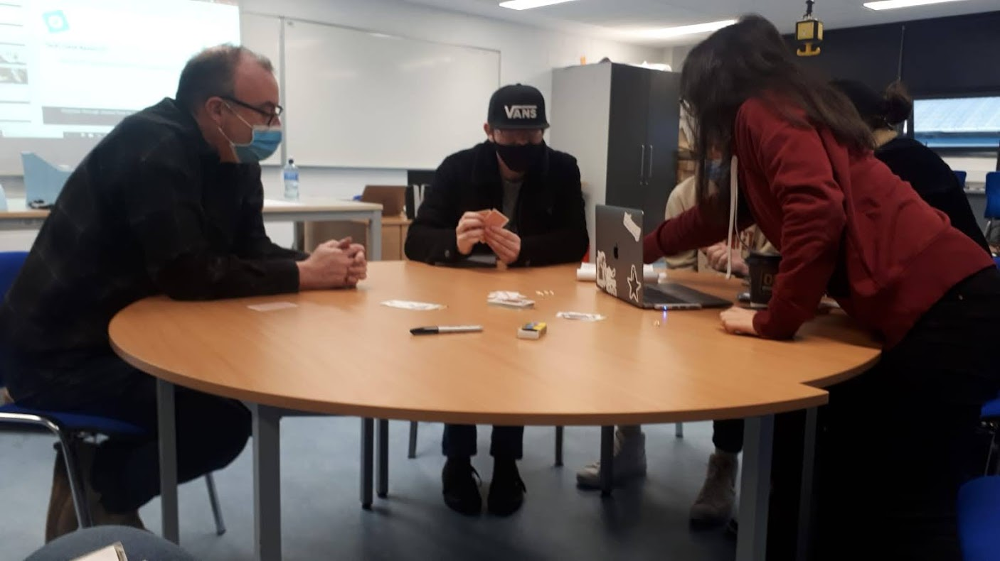
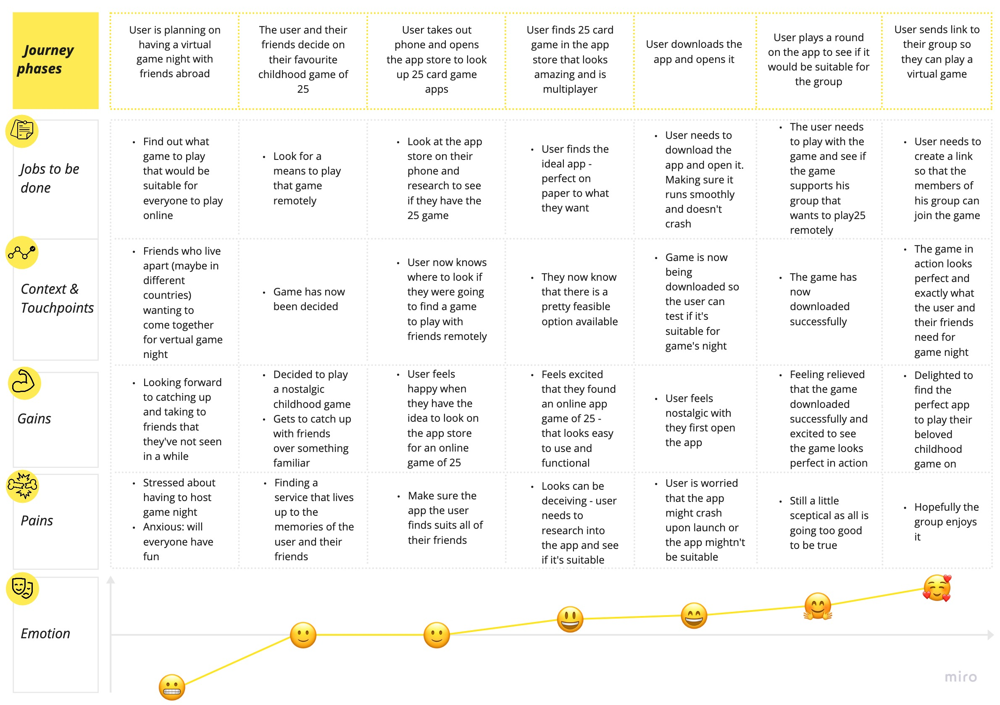

Play25 Online
role: sole ux/ui designer | client: play25online - padraig g | tools: adobe xd
the vision
we want to build the ultimate home for 25 - an online version of the game that is great for beginners and veterans alike. a haven where beginners can learn, safe in the knowledge that they will not have obscenities screamed at them for playing the wrong card at the wrong time. and then the others - those who are experts and those that think they are experts! we will be offering members an online place to learn and play on any internet connected phone, tablet or pc.
what did i do?i was the sole ux designer/researcher on this project, conducting everything from research to usability tests and creating prototypes from low fidelity paper prototypes to digital, interactive hi-fi designs. i was responsible for determining the overall design direction of the project, while communicating with my lecturer and peers to gain feedback on my work. desk researchas part of our desk research, we had to teach others how to play the game, this is to show how you'd create a tutorial when designing the game. so, it's accessible to beginners and advanced player alike. |
 |
stakeholder interview findingsit was evident from the stakeholder interview that there was great scope for creativity. the stakeholder said that the skies the limit, we also weren't designing for just one audience but multiple. we had to cater for a wide range of abilities and ages, with the aim of making the application engaging for all. user stories
|
empathy mapthe empathy-mapping process helps distil and categorise your knowledge of the user into one place. It can be used to capture who a user is. it makes sense of qualitative research (research notes, user-interviews). user pain points
|

|
|  |
ideal customer journey mapuser goals and pain points, determined through the research, were translated into an easy read and graphically structured document to assist future product design. helps show the user's route through the site - navigating through the particular task. |
key insights from usability test
|

|

|
lo-fi prototypesketched screens and states were photographed and inserted into Marvel app for usability testing purposes. Research participant feedback was noted. iterations of lo-fi prototype based on feedback
|
mid-fi prototypeas it came time for mid-fi prototyping, i started expanding the app beyond the scope of the tutorial and actual game. developing a theme and creating features so that you could host a game with friends, join a game with friends, etc. iterations of mid-fi prototype based on feedback
|

|

|
hi-fi prototypefor hi-fi, I colourised the prototype - making the contents livelier. adding colour to the mascot, and gradients to the background giving setting to the prototype and adding to the general atmosphere. the aim of creating a fun, welcoming game at heart. when you want to save the game of 25, you must appeal to the audience and to appeal to the young generations - who will ultimately save the game and pass it down when they're older. hence the fun-loving cartoon like atmosphere. test out the prototype and view submittion video! |